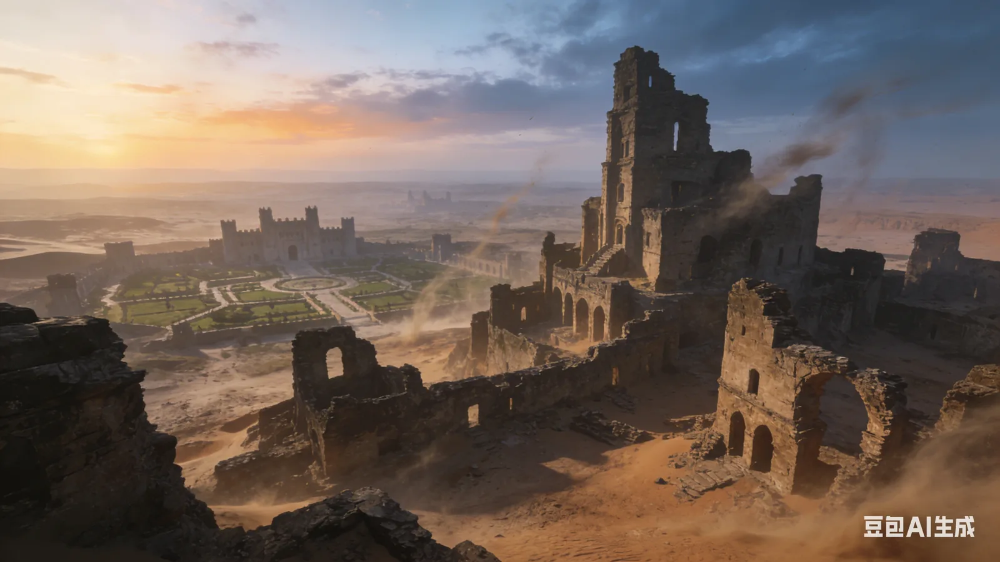

废墟之上

这里是一片废墟，看起来年头已久，即使这样，也能辨认出这里曾经有过很大规模的建筑群。
不知道你以什么名义让我住在这里，总之我跟一位妗妗已经同住了好多天。她在梦里是你的妈妈，却是我现实中三妗的形象。她很着急的要告诉我一件事情，她已经迫不及待的要告诉我了。
在告诉我秘密之前，她故意制造机会，以便问出我跟你之间是什么关系，问及我的生辰年月，在我回答之后她才神秘的说，她的儿子其实是98年的，是在河边上捡来的男婴，把捡来的那年当做了1岁。
我跟你说你是捡来的孩子之后，我们开启了揭开你身世之谜的冒险之旅。
这是一个倒叙的故事。
在恒河水没有泛滥之前，这里有一座刚建好的城堡，不是只有一个建筑的那种城堡，是很多个城堡连在一片的庄园城堡。最初，在什么故事都没开始之前，这里是一片广阔的土地，除了土地，天空，日出和日落，以及夜晚的星星以外，别的什么都没有了。 某天，一位身份尊贵的女人游历到这里，快要临盆了，就在此地驻扎下来。没几天，诞下一名男婴，她打算安顿下来，于是建造了这座城堡。 我们的冒险之旅开始之后遇上了一个人，一位个子特别高，辨认不出男女的人，带领着我们快速穿过这片废墟，一路上，这片废墟显现出了城堡的轮廓，随着我们毫不停歇的脚步，城堡开始热闹起来，人多了起来，像是我们不仅仅穿过这片遗迹，同时也穿越了时间。 眼看着城堡活了过来，这个人从一开始的最简单的布色衣衫，也越穿越多，到后来的丝绸袍锻。我们在城堡里走了很长很长的路，终于复现了这里原本奢华的模样。 我们的身后出现了侍女们，脚步匆匆却也很规整的紧随我们身后，一行人终于停了下来。在我们的前方本来有一个上了年岁满头银发的高个子老人，但是现在老人不见了，只有一位雍容华贵的女主人在前方走着。 她听到动静之后回头看到了我俩，什么话也没说，只是给了一个很淡然的眼神，没有探究，没有轻蔑，没有任何意味。她优雅转过身走下了旋转楼梯，只留下一抹飘逸的白色裙摆，和一个逐渐消失的珠宝王冠。 女主人顺利产下男婴后，没等男婴长大，河水把这里给淹没了。 这里一切的存在都被掩埋在了土里。当再次阅读这篇废墟之上的历史，能感受到，女主人和侍女都不欢喜于长大后的孩子再次回到这里，不过这里有你没你她们也不甚在意，因为她们已经不是现在进行时的存在了。我们和发生在废墟之上的任何人和事都不是同一个时空下的存在。 我们看到的，只是曾经存在过的繁华。
现在这里是一片废墟，只有土地，天空，日出和日落，以及夜晚的星星。